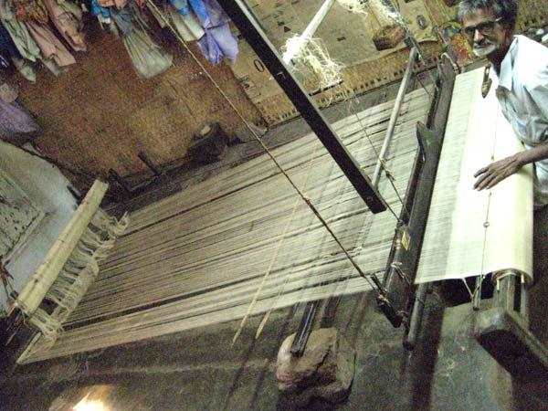

Ponduru · Handspun · Handwoven
A living tradition of Ponduru Khadi.
The Andhra Fine Khadi Karmikabhivrudhi Sangham (AFKKS) is a government-recognized handloom and Khadi production centre on Main Road near Ponduru Bus Stand, Srikakulam district. It preserves the artisanal practice of Ponduru Khadi.
Main Road, near Ponduru Bus Stand, Ponduru, Srikakulam – 532168, Andhra Pradesh
Learn the journey
AFKKS product range
Ponduru Khadi for every day and occasion
Product availability and pricing are confirmed on enquiry.
The heritage journey
Eleven stages from cotton to cloth
Every metre carries the knowledge, labour and tradition of many skilled hands.
AFKKS leadership
Current leadership
Contact AFKKS
The Andhra Fine Khadi Karmikabhivrudhi Sangham
For product details, prices and orders, please contact the Sangham.
Main Road, near Ponduru Bus Stand, Ponduru, Srikakulam – 532168, Andhra Pradesh